Manual para clientes y equipos de restaurante
Cómo usar Satisfecho POS de principio a fin
Esta guía explica la aplicación completa con pasos prácticos: configuración inicial, mesas, pedidos, pagos, reservas, cocina, barra, inventario, reportes, turnos, contratos, opiniones y portal de proveedores. Las capturas son reales del entorno de demostración.
Leer primero
Satisfecho POS está dividido en tres experiencias. El personal trabaja desde el panel interno; los clientes usan el menú público desde un QR, enlace o búsqueda de mesa; los proveedores usan un portal separado cuando el restaurante desea recibir catálogos de producto externos.
Si eres nuevo, empieza por Configuración, luego crea tus productos, configura mesas y QR, y por último prueba el flujo completo de pedido del cliente y operación del personal.
Regla práctica
Primero configura el restaurante. Después carga productos, mesas, personal y métodos de pago. No publiques QR ni enlaces a clientes hasta haber hecho una prueba real de pedido, cocina, pago y cierre de mesa.
Índice
1. Primeros pasos
Pantalla pública de inicio
La página inicial muestra los restaurantes disponibles, accesos para reservar, iniciar sesión, usar mesa por código y, si está configurado, hacer pedidos para llevar. También incluye el acceso de proveedores y el selector de idioma.
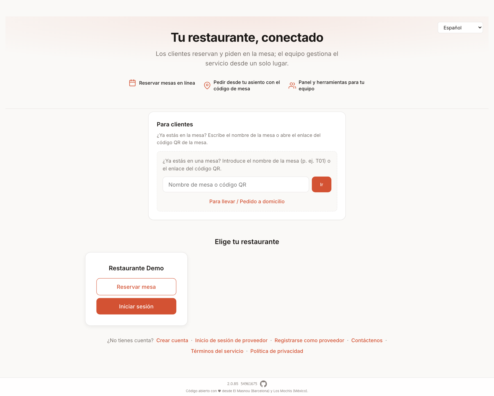
Crear la primera cuenta
El registro crea una cuenta de restaurante. La primera persona que registra un restaurante debe ser quien administrará la operación inicial, porque desde esa cuenta se crean usuarios, productos, mesas, pagos y configuración.
- Entra a Registrarse.
- Escribe nombre, correo, contraseña y datos básicos del restaurante.
- Guarda. Después entra con el correo y contraseña que acabas de crear.
- Completa la configuración antes de compartir enlaces públicos.
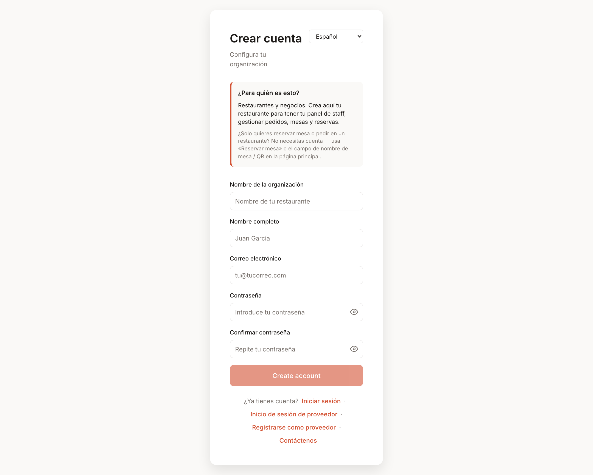
Iniciar sesión y recuperar contraseña
El personal entra por Iniciar sesión. Si el restaurante activó verificación de dos pasos, el sistema pedirá un código temporal después de la contraseña. Si alguien olvida su contraseña, debe usar el enlace de recuperación y seguir el correo recibido.
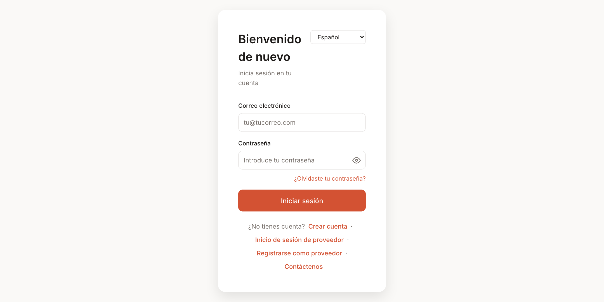
Panel interno y navegación
Después de iniciar sesión aparece el panel interno. El menú lateral muestra solo las secciones permitidas por el rol y por los módulos activados en configuración. En pantallas pequeñas se usa como menú desplegable.
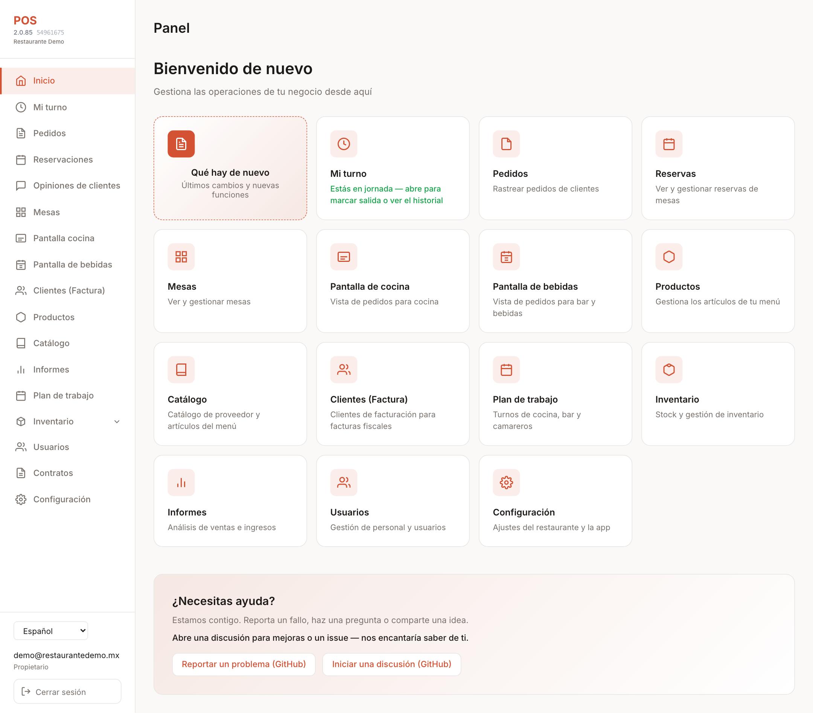
2. Roles y permisos
Los permisos protegen acciones sensibles. Si un usuario no ve una sección, no es un error: su rol no tiene permiso o el módulo fue desactivado en Configuración > Navegación.
| Rol | Uso recomendado | Permisos principales | Límites importantes |
|---|---|---|---|
| Propietario | Dueño o responsable máximo. | Acceso completo: configuración, usuarios, productos, mesas, reservas, reportes, inventario, contratos y datos. | Debe ser una cuenta protegida. No se recomienda compartirla. |
| Admin | Gerente operativo. | Gestiona operación diaria, usuarios no propietarios, productos, mesas, reservas, inventario, reportes, contratos y plan de trabajo. | Puede tener restricciones en datos de facturación, llaves de pago o usuarios propietarios. |
| Camarero | Servicio en sala. | Ve productos, mesas, reservas, clientes fiscales y pedidos. Puede actualizar estados, marcar pagado y retirar líneas permitidas. | No administra configuración, usuarios, inventario ni reportes globales. |
| Recepcionista | Reservas y atención inicial. | Gestiona reservas, consulta mesas, clientes y pedidos. | No modifica productos ni configuración; su acceso a pedidos es más limitado. |
| Cocina | Preparación de comida. | Ve pedidos y cambia estados de líneas asignadas a cocina. También ve su turno y contratos. | No cobra ni administra mesas. |
| Barra | Preparación de bebidas. | Similar a cocina, enfocado en la pantalla de barra y productos de bebidas. | No cobra ni administra configuración. |
| Proveedor | Proveedor externo. | Usa un portal separado para su catálogo y datos de empresa. | No entra al panel interno del restaurante. |
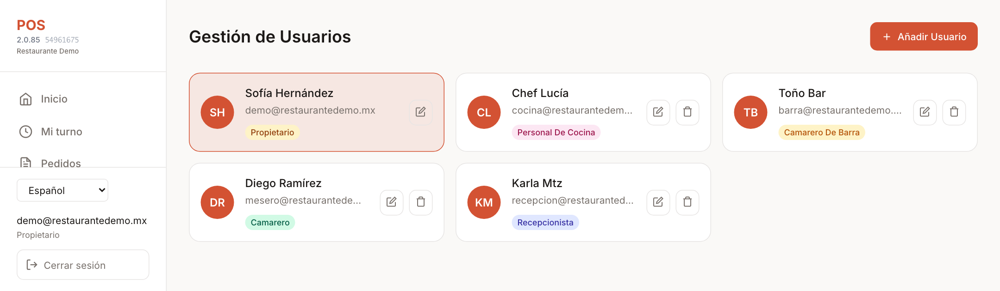
3. Configuración
Configuración controla cómo se ve y se comporta el restaurante. Haz esta parte con calma antes de operar en vivo: afecta los QR, reservas, pagos, horarios, seguridad, cocina, inventario y visibilidad de módulos.
Perfil, marca y apariencia pública
En Perfil se editan nombre del restaurante, descripción, teléfono, correo, moneda, país, zona horaria, logo, imagen de cabecera y color de fondo público. Estos datos aparecen en páginas públicas, reservas, menú QR y algunas comunicaciones.
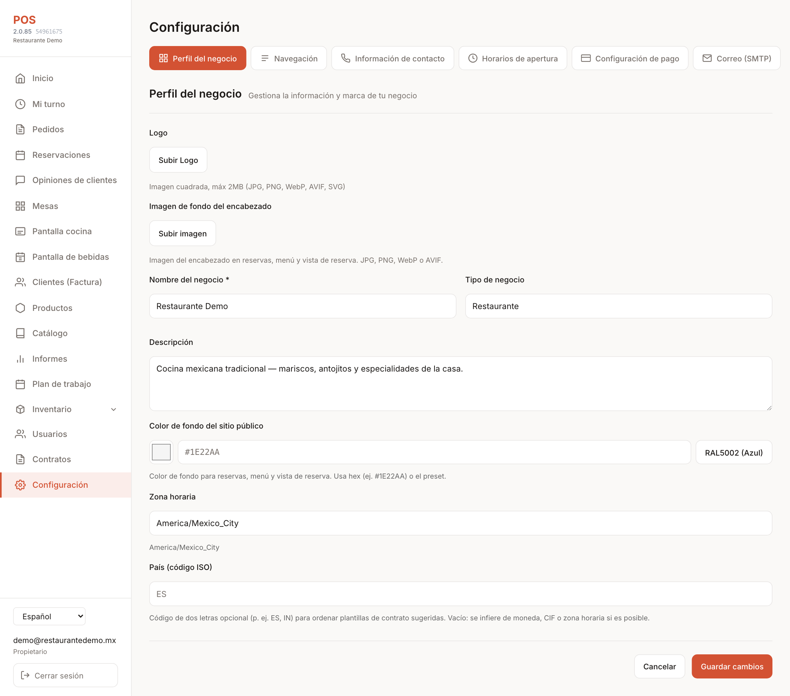
Navegación y módulos
La pestaña Navegación permite activar o desactivar módulos como mesas, plan de trabajo, proveedores, reservas, cocina/barra e inventario. Si un módulo está apagado, el menú lo oculta y los enlaces directos pueden redirigir al inicio interno.
- Desactiva módulos que tu restaurante no usa para simplificar el trabajo del personal.
- Activa inventario solo cuando vayas a mantener stock, proveedores, compras y recetas.
- Activa cocina/barra si necesitas pantallas de preparación por estación.
Contacto, ubicación, legal y reseñas
En Contacto se guardan dirección, web, enlaces a Google Maps y OpenStreetMap, URL de reseñas de Google, NIF/CIF, CCC, URL de términos públicos, URL de privacidad pública y datos fiscales básicos. También se define el impuesto por defecto cuando el producto no tiene una regla específica.
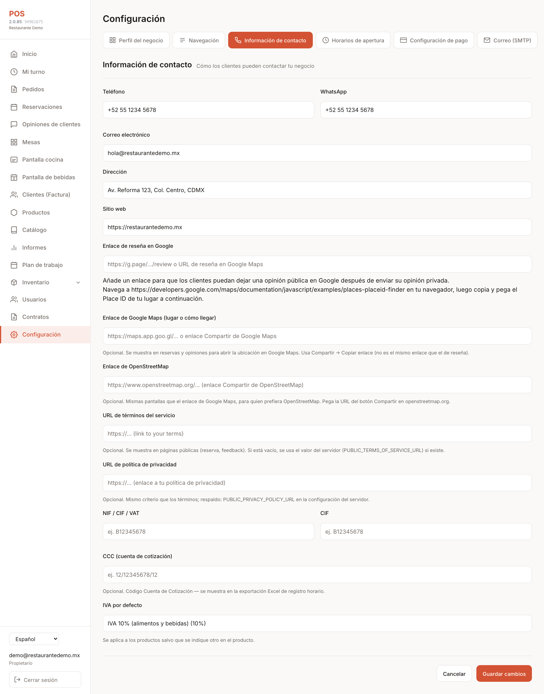
Horarios, turnos esperados y excepciones
En Horarios configuras los horarios semanales del restaurante, necesidades de personal por franja y patrones planificados a futuro. También puedes crear excepciones por fechas concretas, por ejemplo festivos, vacaciones o eventos privados.
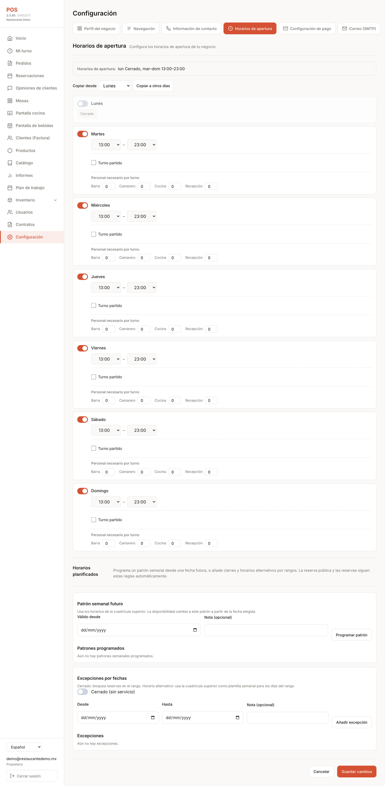
Pagos, facturación, propinas y verificación de ubicación
En Pagos se ajustan métodos de pago visibles, propinas, comportamiento de cobro y datos de proveedores de pago como Stripe o Revolut cuando estén activados en tu instalación. También puede haber opciones de factura fiscal, serie interna, modo de pruebas o producción, y verificación de ubicación para pagos presenciales.
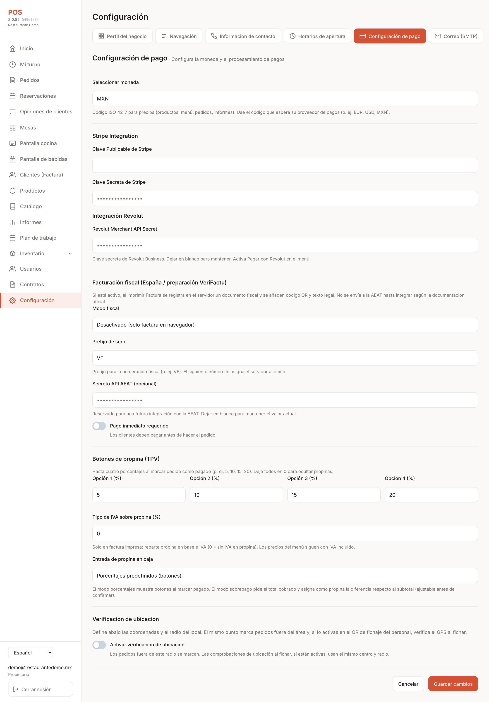
Reservas públicas
La configuración de reservas controla si el cliente puede reservar, si se exige prepago, la política de cancelación, tolerancia de llegada, duración media de mesa, intervalo entre franjas, máximo de personas por franja, mesas para clientes sin reserva, código de vestimenta y recordatorios de 24 horas o 2 horas.
- Usa intervalos de reserva que tu equipo pueda cumplir, por ejemplo 15 o 30 minutos.
- Define tolerancia de llegada para saber cuándo marcar no-show.
- Activa recordatorios solo cuando correo o mensajería estén correctamente configurados.
Correo saliente
Si tu despliegue tiene SMTP habilitado, úsalo para recuperación de contraseña, recordatorios, confirmaciones y comunicaciones relacionadas con reservas. Prueba el correo antes de activar recordatorios automáticos.
Impuestos e IVA
En Impuestos puedes crear tipos de IVA o impuestos equivalentes. Después, cada producto puede usar el impuesto por defecto del restaurante o una regla propia.
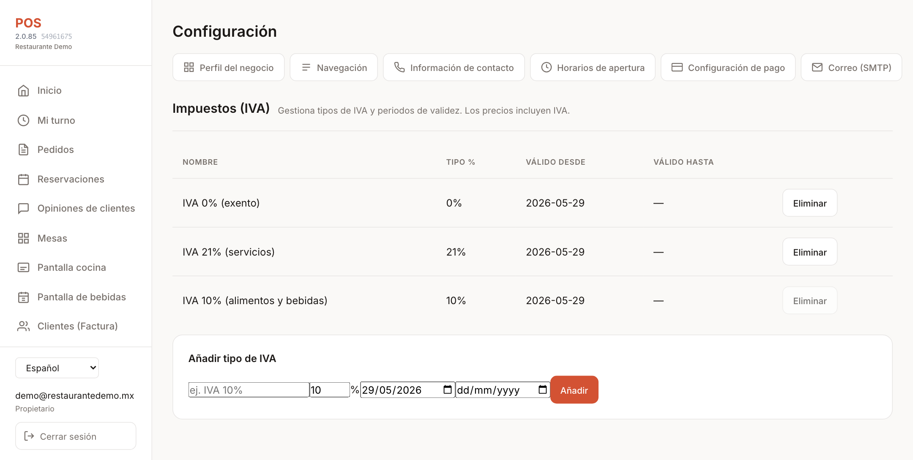
Estaciones de cocina
Las estaciones agrupan el trabajo de preparación. Un producto puede asignarse a una estación para que aparezca donde corresponde: cocina caliente, postres, barra, parrilla u otra zona.
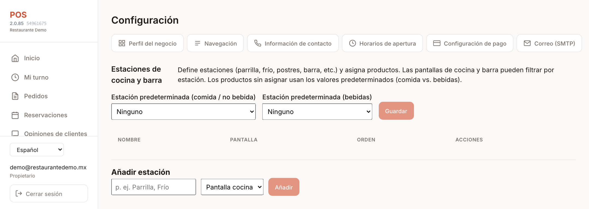
Integraciones de reparto
En Integraciones se configuran marketplaces o canales externos cuando el despliegue incluye el adaptador correspondiente. Mantén los enlaces técnicos y secretos protegidos.
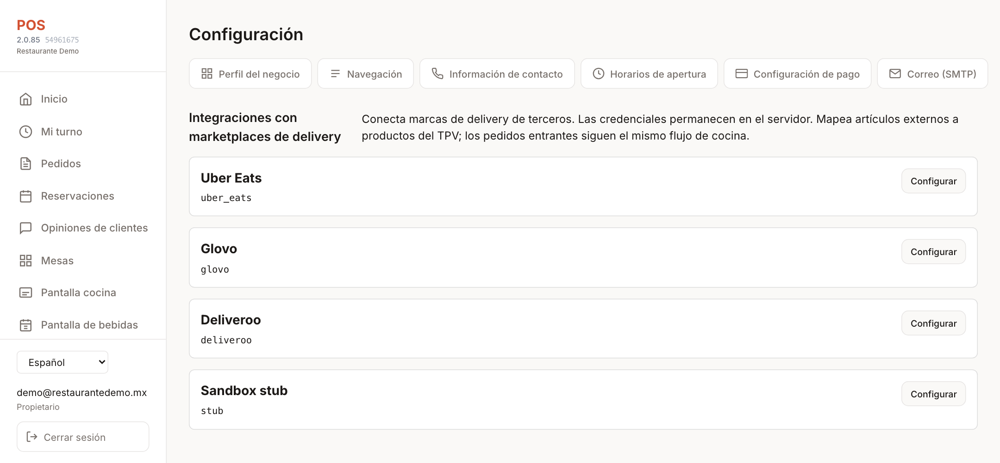
Publicaciones sociales
Las publicaciones sociales permiten preparar mensajes y contenido para canales conectados, como Meta, cuando la conexión OAuth está configurada. Úsalo para promociones, novedades o campañas de temporada.
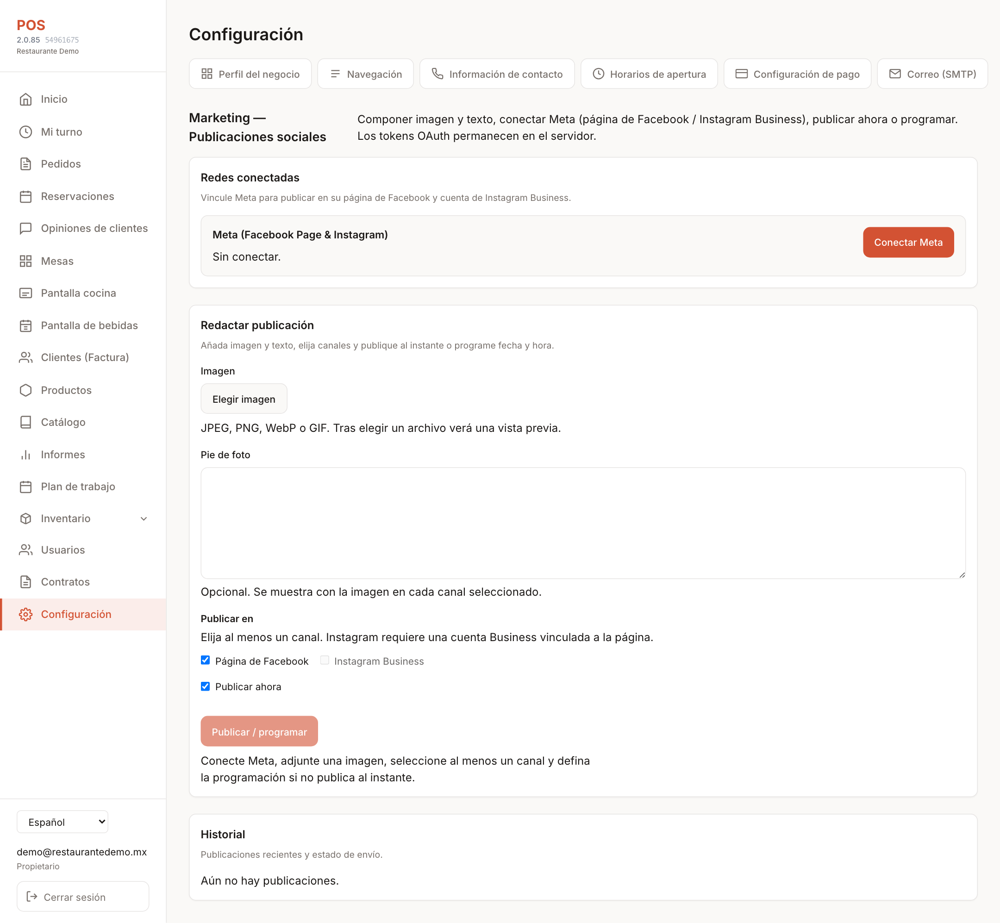
Seguridad, fichaje y datos
En Seguridad puedes activar código de dos pasos para accesos sensibles y configurar el fichaje del personal con QR. Si está habilitada la verificación por ubicación, el dispositivo pedirá permisos de ubicación al fichar.
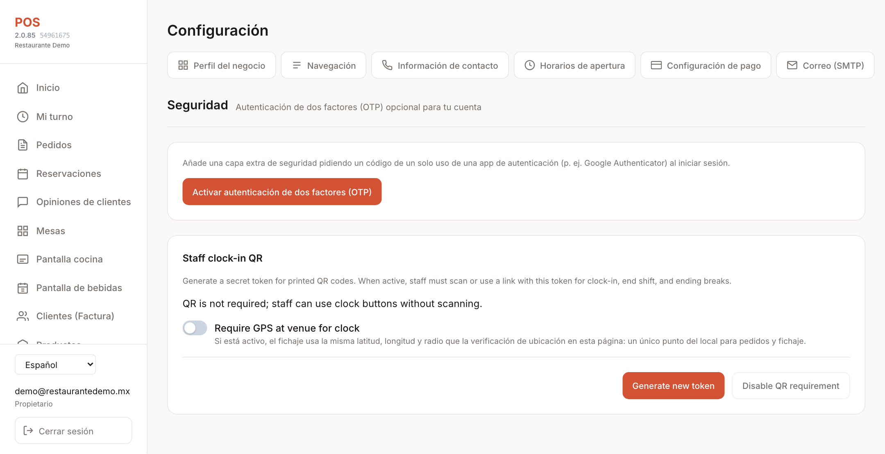
En Datos y privacidad, el propietario puede exportar información del restaurante y, si el despliegue lo permite, ejecutar acciones destructivas como purgar datos. Estas acciones deben reservarse al propietario y hacerse con copia previa.
Plantillas, traducciones y proveedores internos
Configuración también incluye plantillas de contratos, traducciones de textos visibles y proveedores/productos propios del restaurante. Estas áreas ayudan a mantener documentos, etiquetas públicas y compras con la misma información base.
4. Productos y catálogo
Productos es el corazón del menú. Cada producto puede tener precio, coste, imagen, categoría, subcategoría, ingredientes, descripción, impuesto propio, estación de cocina, disponibilidad por horario y preguntas de personalización.
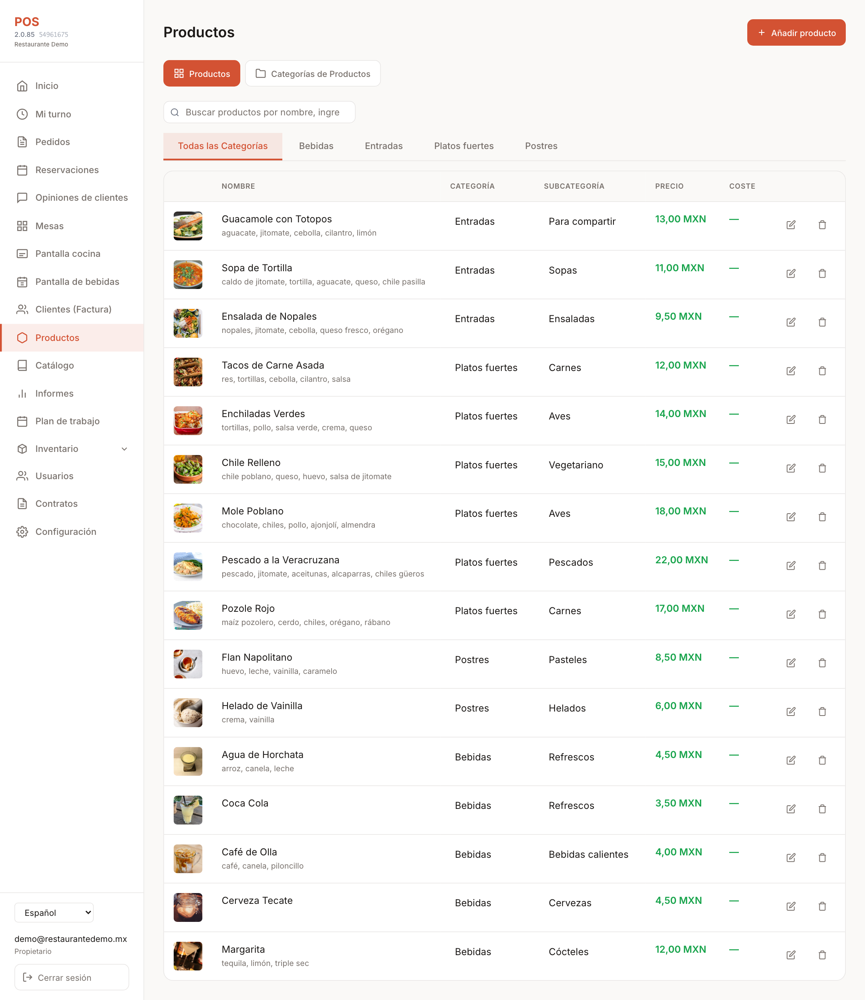
Crear o editar un producto
- Entra a Productos y abre la pestaña de productos.
- Escribe nombre, precio de venta y, si lo conoces, coste de compra o elaboración.
- Añade descripción e ingredientes. Esto ayuda al cliente y al personal con alergias.
- Selecciona categoría, subcategoría y estación de cocina cuando aplique.
- Sube una imagen real y clara del plato o bebida.
- Si el producto solo se vende en ciertos horarios, define disponibilidad desde/hasta.
- Guarda. Después añade preguntas de personalización si el producto lo necesita.
Preguntas y personalizaciones
Después de guardar un producto puedes añadir preguntas para el cliente o el camarero: selección única, selección múltiple, escala o texto libre. Cada pregunta puede ser obligatoria y tener un orden. Úsalas para términos de cocción, tamaños, salsas, extras, retiradas o notas.
Costes, recetas y precio ideal
Si inventario y recetas están activos, puedes vincular ingredientes reales al producto. El sistema usa esos costes para ayudar a calcular margen y precio ideal. Esta ayuda funciona bien solo si el stock, unidades y costes están actualizados.
Catálogo de proveedores
La sección Catálogo reúne productos de proveedores o productos externos que el restaurante consulta para compras, disponibilidad o referencia. No sustituye al menú de venta al cliente: el menú visible al cliente sale de Productos.
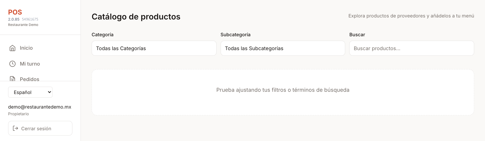
5. Mesas y plano
Mesas conecta la sala con los pedidos. Cada mesa puede tener nombre, capacidad, estado, planta, QR, PIN y camarero asignado. También puedes trabajar con vista de listado, tarjetas o plano visual.
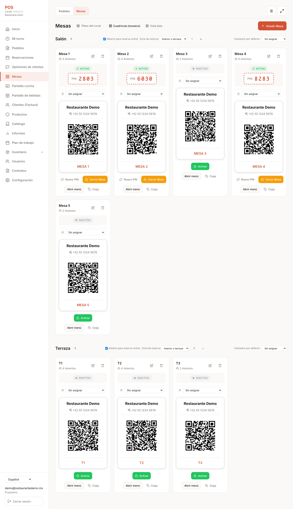
Qué configurar en cada mesa
- Nombre visible: por ejemplo T01, Terraza 4 o Barra 2.
- Capacidad: número normal de comensales.
- Planta o zona: salón, terraza, barra, privado u otra área.
- PIN: protege acciones del cliente como confirmar o modificar pedidos.
- Camarero asignado: se puede definir por planta y ajustar por mesa.
- Activo: solo las mesas activas se usan en operación y enlaces públicos.
QR, enlace y menú abierto por personal
El QR de mesa abre el menú público de esa mesa. El enlace se puede copiar para imprimirlo o enviarlo. La acción Abrir menú permite al personal ayudar a una mesa desde su dispositivo; no debe usarse como enlace público permanente.
Grupos de mesas y reasignación
Puedes unir mesas cuando varias mesas forman una sola cuenta o una reserva grande. Si intentas borrar una mesa con pedidos o reservas asociados, el sistema puede pedir reasignar información para no perder historial.
Plano visual
El plano ayuda a ver rápidamente qué mesas están libres, ocupadas, con pago pendiente, asignadas a un camarero o agrupadas. Los colores y chips de pago permiten detectar acciones pendientes sin abrir cada mesa.
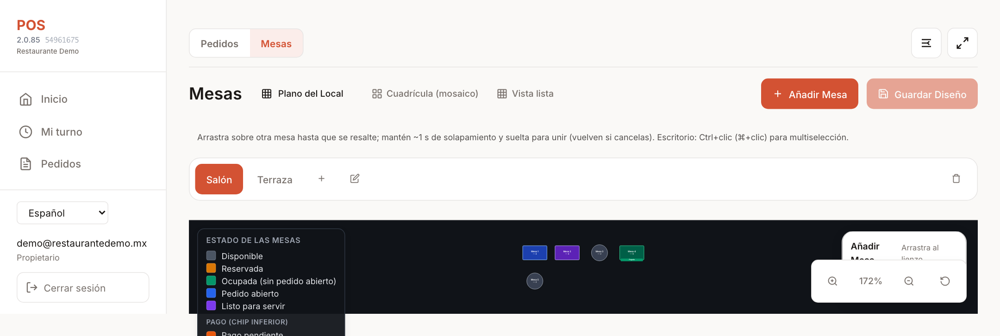
6. Experiencia del cliente
El cliente puede usar el menú sin instalar nada. Entra por QR de mesa, enlace, búsqueda de mesa en la página pública o ruta de pedidos para llevar cuando el restaurante la tenga activa.
Identificación inicial
Al entrar al menú de mesa, el cliente puede escribir su nombre. Esto ayuda al personal a reconocer quién hizo el pedido y a resolver dudas de la mesa.

Explorar productos
El menú muestra categorías, subcategorías, destacados, imágenes, precios, ingredientes, alérgenos o datos dietéticos cuando están cargados. El cliente añade productos con el botón de suma.

Carrito, personalización y confirmación
Antes de enviar, el cliente revisa cantidades, personalizaciones y total. Si el producto tiene preguntas obligatorias, debe responderlas antes de confirmar. Para evitar pedidos accidentales, la mesa puede pedir PIN.


Pedido en curso, historial y acciones
Después de enviar, el cliente ve el estado del pedido. Puede seguir añadiendo productos si la mesa sigue abierta. Según configuración y estado, puede solicitar pago, avisar al camarero, cancelar elementos todavía permitidos o consultar historial.

Formas de pago visibles al cliente
Las opciones dependen de la configuración del restaurante. Pueden aparecer pago en línea, terminal, efectivo, Revolut, Stripe o llamada al camarero. Si el pago en línea no está configurado, el cliente puede pedir que el personal cobre en mesa.
Pedidos para llevar o a domicilio
Si el restaurante tiene mesa o canal de pedidos para llevar configurado, la página pública de pedidos muestra restaurantes disponibles. El flujo se parece al menú de mesa, pero se usa para pedidos sin estar sentado en una mesa física.
7. Operación diaria
La sección de pedidos es el centro del servicio. El personal puede ver pedidos activos, cuentas sin pagar e historial. También existen pantallas separadas para cocina y barra.
Pedidos activos
En Pedidos se ven mesas, líneas, estados, notas y totales. Desde aquí se pueden añadir productos, editar pedidos, retirar líneas permitidas, marcar urgente, avanzar estados y abrir opciones de cobro.
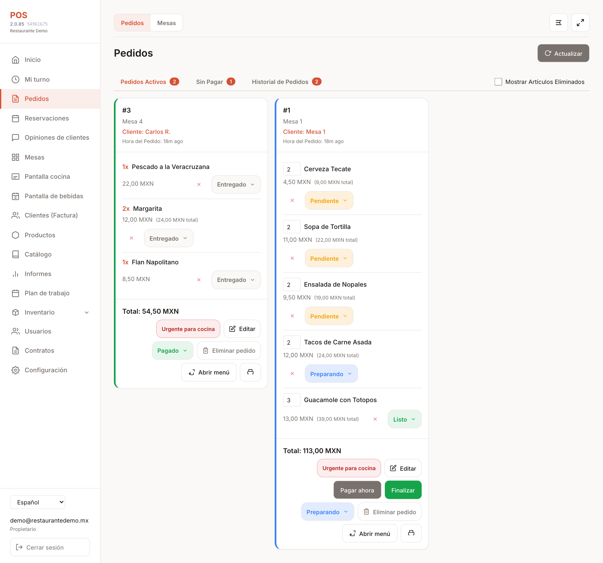
Estados del pedido y de las líneas
Un pedido puede pasar por estados como recibido, en preparación, listo, entregado, pagado o cancelado. Cada línea también puede tener su propio estado, lo que permite que cocina y barra trabajen en paralelo.
- Recibido: el cliente o personal acaba de enviar el pedido.
- Preparando: cocina o barra lo está trabajando.
- Listo: está preparado para entregar.
- Entregado: ya llegó a la mesa.
- Pagado: la cuenta quedó cerrada.
Cobro, propina y factura
En el modal de pago puedes elegir método, registrar propina, gestionar sobrepago cuando aplique, finalizar orden y abrir factura. Los métodos visibles dependen de configuración: efectivo, terminal, Stripe, Revolut u otros.
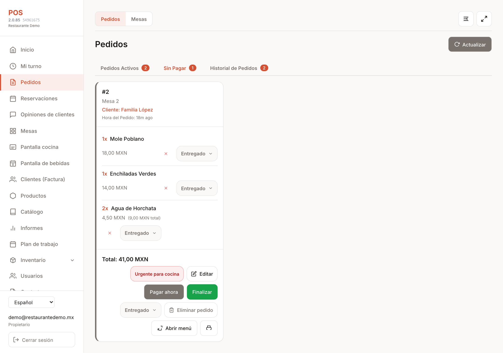
Historial
El historial permite revisar pedidos anteriores, importes, estados y elementos retirados cuando esa opción está visible. Es útil para resolver dudas, auditoría interna y reportes.
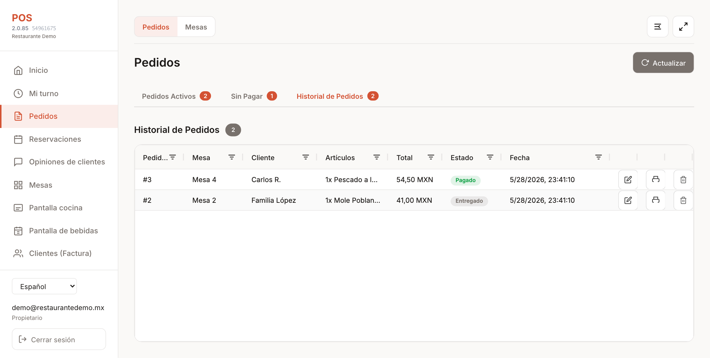
Pantalla de cocina
Cocina muestra las líneas que requieren preparación. El equipo puede avanzar estados sin entrar a cobros ni configuración. Si usas estaciones, cada producto llega a la zona asignada.
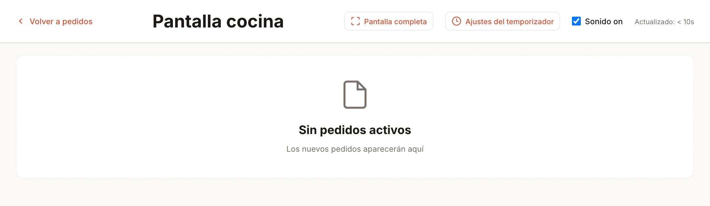
Pantalla de barra
Barra funciona como una pantalla de preparación enfocada en bebidas u otra estación similar. Es especialmente útil cuando la barra debe trabajar separada de la cocina.
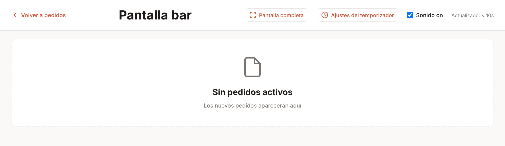
8. Reservas y opiniones
Reservas internas
En Reservas el personal puede crear, buscar y gestionar reservas. La vista permite filtrar por fecha, teléfono o estado, ver posibles sobrecupos, enviar recordatorios, asignar mesa, marcar llegada, marcar no-show, cancelar o finalizar.
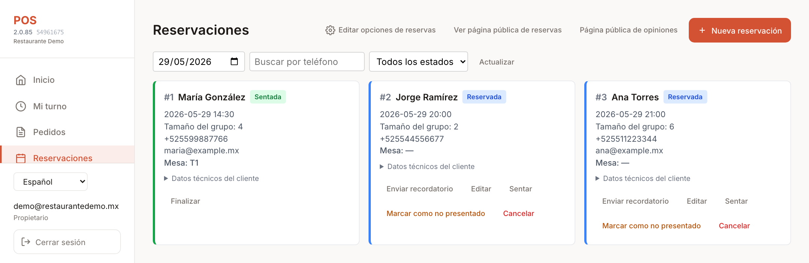
Reserva pública
El cliente puede reservar desde la página pública del restaurante. El formulario muestra fecha, turno, hora disponible, número de personas, preferencia de zona o planta cuando está habilitada, datos de contacto, alergias y notas.
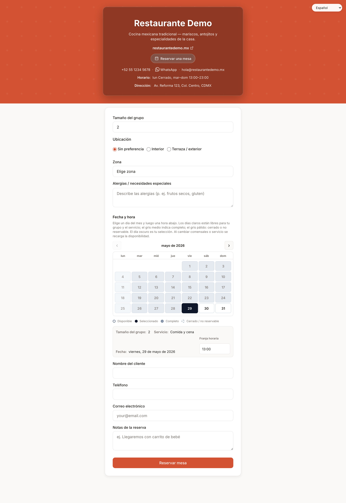
Gestionar una reserva desde el enlace del cliente
Cuando el cliente recibe un enlace de reserva, puede consultar datos, cancelar si la política lo permite o avisar de retraso. Esto reduce llamadas y mantiene informado al equipo.
Opiniones de clientes
El sistema incluye una página pública de feedback y una bandeja interna. Puedes compartir el enlace o QR después de la visita. En la bandeja interna se revisan valoraciones, comentarios y datos asociados.
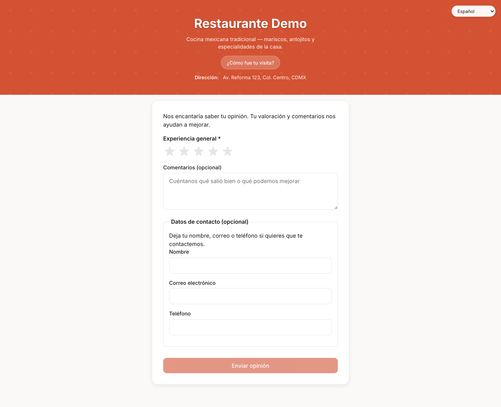
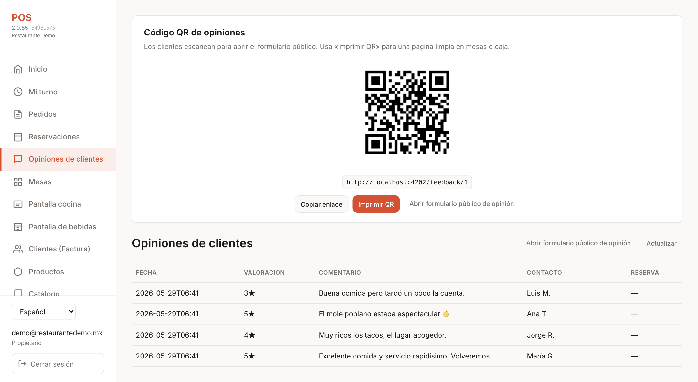
9. Equipo, turnos y contratos
Usuarios
En Usuarios se crean cuentas del personal, se asignan roles y se actualizan datos. Usa correos reales y evita compartir credenciales. El rol determina el acceso real, no solo el menú visible.
Mi turno
Mi turno permite al trabajador ver su estado de jornada, fichar entrada o salida si está habilitado, consultar pausas y revisar información relacionada con su día.
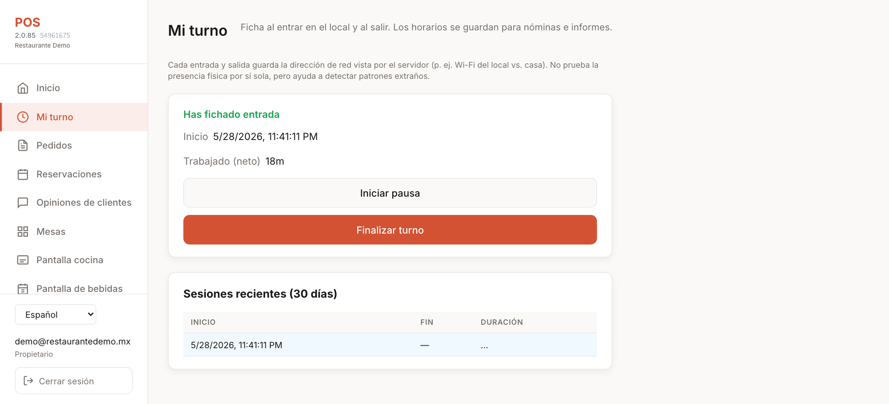
Plan de trabajo semanal y calendario
El plan de trabajo permite organizar turnos por semana y revisar un calendario. Se alimenta de horarios del restaurante, necesidades de personal y contratos. Sirve para ver cobertura, asignar personal y detectar huecos antes del servicio.
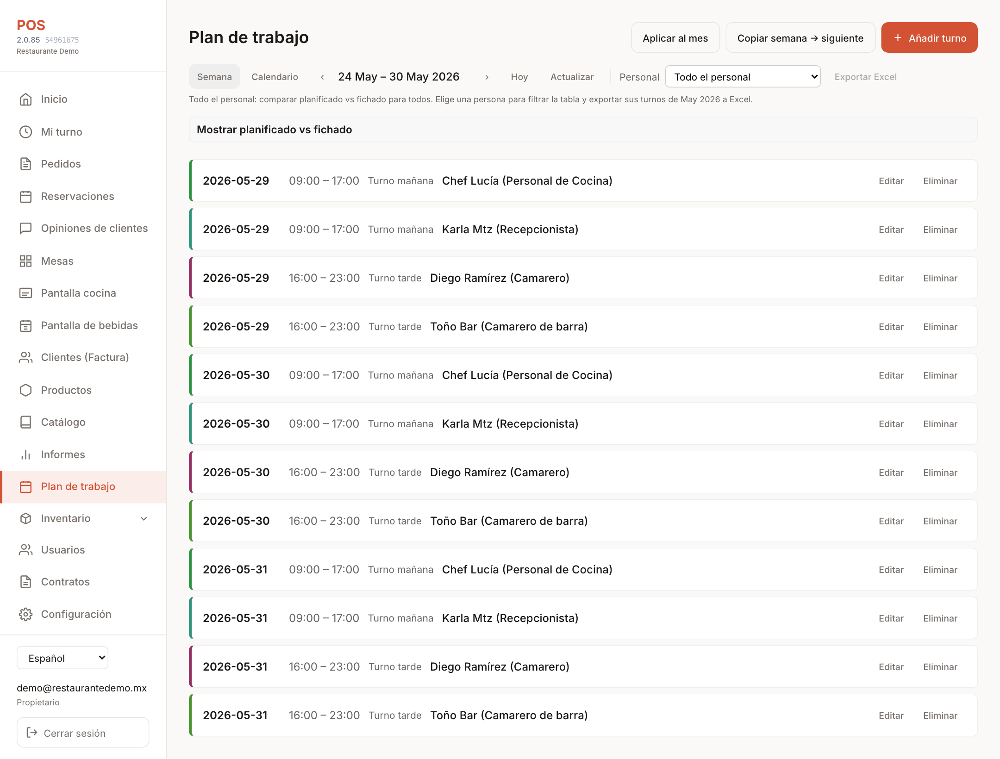
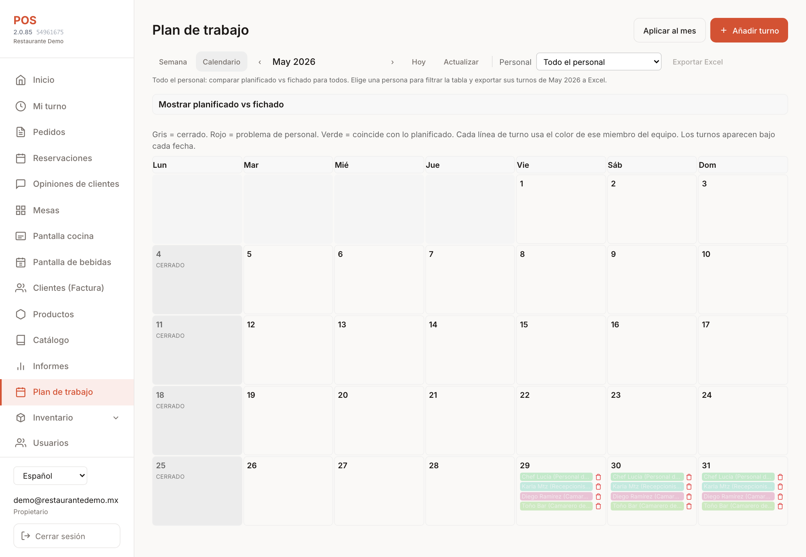
Contratos
Contratos centraliza contratos de personal y plantillas. Según permisos, el usuario puede leer, crear, actualizar o gestionar documentos. Úsalo junto con el plan de trabajo para que horas, funciones y condiciones estén alineadas.
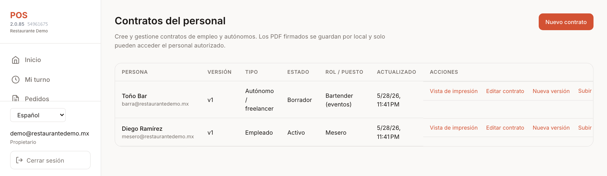
10. Inventario, clientes y reportes
Clientes fiscales
La sección Clientes guarda datos necesarios para facturas o identificación fiscal. El personal autorizado puede crear y editar clientes para asociarlos con pedidos y facturas.
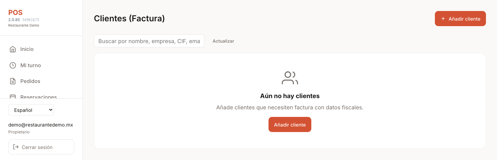
Inventario: artículos y stock
Inventario permite controlar artículos, SKU, categorías, unidades, coste, stock mínimo, proveedor por defecto y movimientos. Los ajustes de stock pueden registrar entradas, salidas, merma o correcciones.
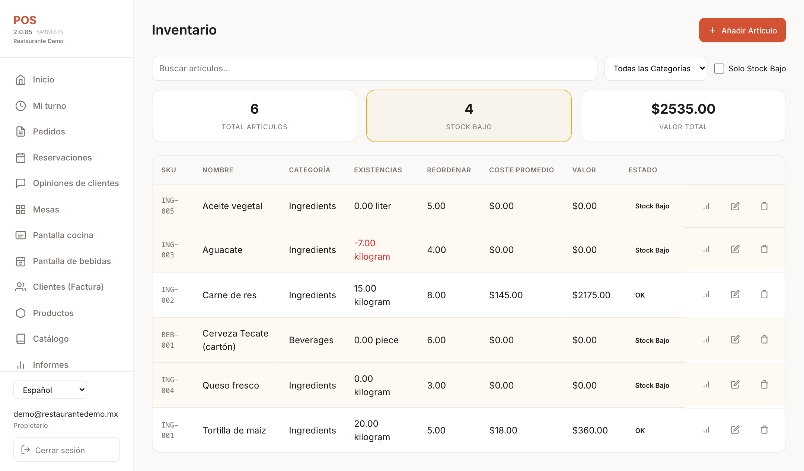
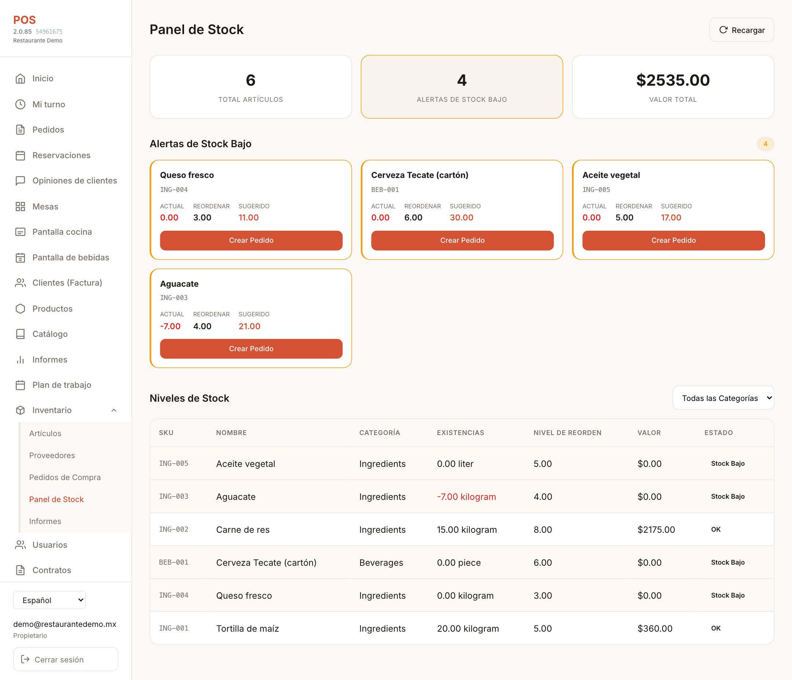
Proveedores y órdenes de compra
Puedes crear proveedores, generar órdenes de compra, cambiar estados, imprimir PDF y recibir mercancía para actualizar stock. Al recibir, revisa cantidades y precios antes de confirmar.
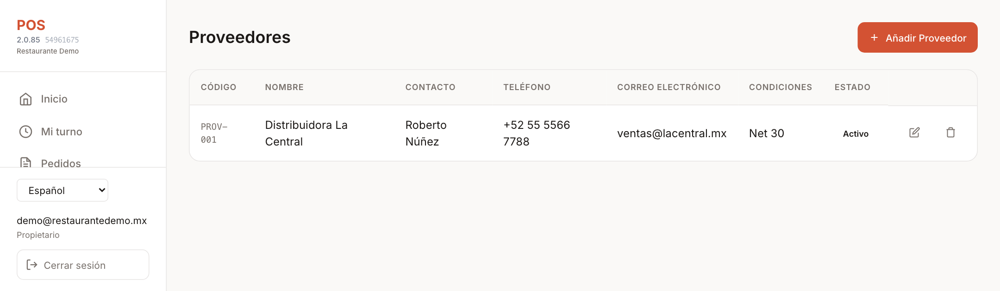
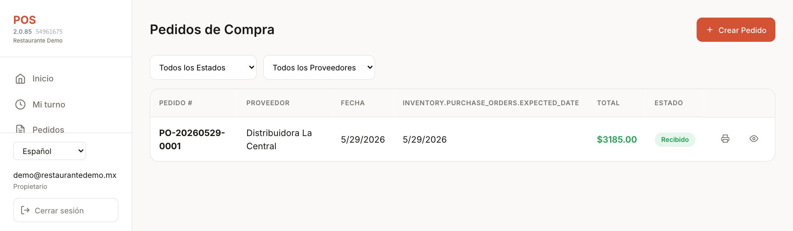
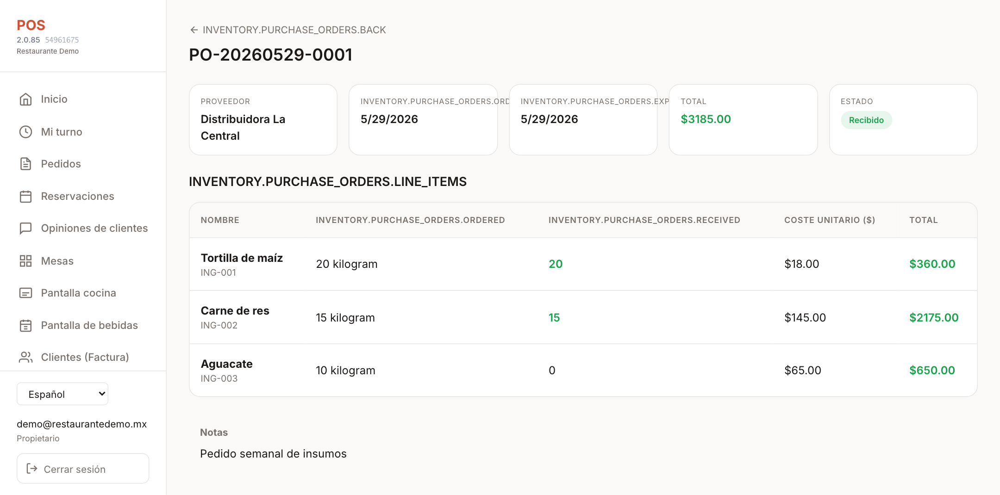
Reportes de inventario
Los reportes de inventario ayudan a detectar bajo stock, consumo, coste y compras. Son más útiles cuando recetas y movimientos se registran con disciplina.
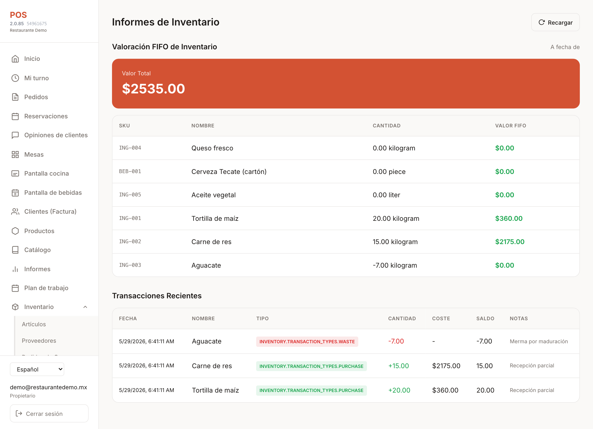
Reportes de ventas y operación
Reportes muestra ingresos, propinas, costes, beneficios, promedio de pago, promedio por cliente, ventas diarias, desgloses y exportaciones cuando están disponibles. Úsalo para tomar decisiones de menú, personal y horarios.
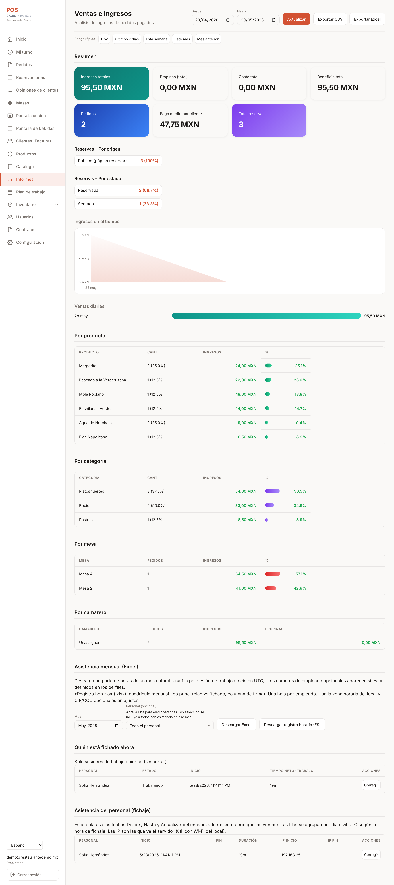
11. Portal de proveedores
El portal de proveedores es independiente del panel interno. Un proveedor puede registrarse, iniciar sesión, recuperar contraseña, editar datos de empresa y mantener su catálogo con imágenes, precios y disponibilidad. Actualmente algunas pantallas del portal pueden aparecer en inglés.
- El proveedor no gestiona pedidos de sala ni configuración del restaurante.
- El restaurante decide si usa productos del proveedor como referencia o catálogo.
- Los datos bancarios, fiscales y de contacto deben ser revisados por el proveedor.
12. Checklists
Puesta en marcha inicial
- Crear cuenta de propietario y guardar credenciales de forma segura.
- Completar perfil, contacto, ubicación, impuestos y zona horaria.
- Configurar horarios, reservas y tolerancia de llegada.
- Activar solo los módulos necesarios en navegación.
- Crear productos, categorías, imágenes y preguntas obligatorias.
- Crear plantas, mesas, PIN y QR.
- Crear usuarios reales con roles correctos.
- Probar un pedido completo: cliente, cocina/barra, pago y cierre.
- Probar una reserva pública y su gestión interna.
- Revisar reportes y permisos antes de abrir al público.
Antes de cada servicio
- Verificar que mesas y QR estén activos.
- Comprobar productos agotados o no disponibles.
- Revisar reservas del día y mesas asignadas.
- Confirmar que cocina y barra ven sus pantallas.
- Revisar usuarios de turno y fichajes cuando aplique.
- Confirmar métodos de cobro y caja.
- Revisar bajo stock si inventario está activo.
Cierre del día
- Cerrar pedidos activos y revisar cuentas sin pagar.
- Resolver pedidos cancelados o líneas retiradas.
- Revisar propinas, métodos de pago y facturas.
- Registrar mermas o ajustes de stock relevantes.
- Mirar reportes del día y anotar incidencias.
- Revisar opiniones nuevas y responder internamente.
Seguridad operativa
- No compartir cuentas de propietario o admin.
- No enviar llaves de pago, SMTP o tokens por chat.
- Desactivar usuarios que ya no trabajan en el restaurante.
- Usar roles mínimos necesarios para cada puesto.
- Probar cambios de configuración antes de servicio real.
- Exportar datos antes de acciones destructivas.
13. Problemas frecuentes
Un usuario no ve una sección
Revisa dos cosas: su rol en Usuarios y si el módulo está activo en Configuración > Navegación. Si ambas cosas están bien, cierra sesión y vuelve a entrar.
El cliente no puede pedir desde una mesa
Comprueba que la mesa esté activa, que el QR corresponda a esa mesa, que el producto esté disponible en ese horario y que el PIN entregado sea correcto. Si el menú no carga productos, revisa categorías y disponibilidad.
Una reserva no aparece disponible
Revisa horarios del restaurante, reglas de reservas, duración media de mesa, intervalo de franjas, capacidad, zona preferida y reservas existentes en la misma franja.
No aparece pago en línea
El pago en línea solo aparece cuando el método está activo y correctamente configurado. Si no hay proveedor de pago, usa efectivo, terminal o llamada al camarero.
El stock no coincide
Revisa unidades, recetas, compras recibidas y ajustes manuales. Un producto vendido solo descuenta stock correctamente cuando la receta y unidades están bien configuradas.
Glosario breve
| Concepto | Significado |
|---|---|
| Slot | Bloque de hora disponible para reservar. |
| PIN de mesa | Código que confirma acciones del cliente en una mesa. |
| Estación | Zona de preparación como cocina, barra, postres o parrilla. |
| Merma | Producto perdido, desperdiciado o no vendible que debe descontarse del stock. |
| No-show | Reserva confirmada cuyo cliente no llegó dentro de la tolerancia definida. |